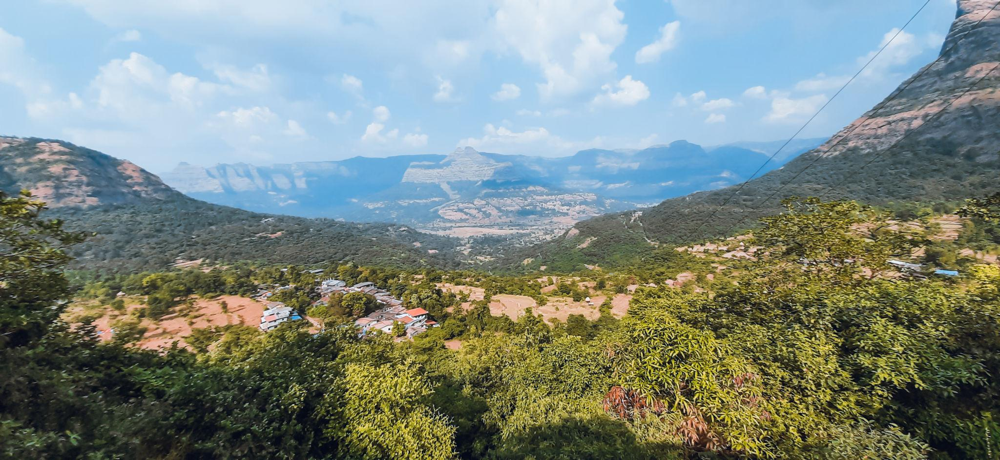
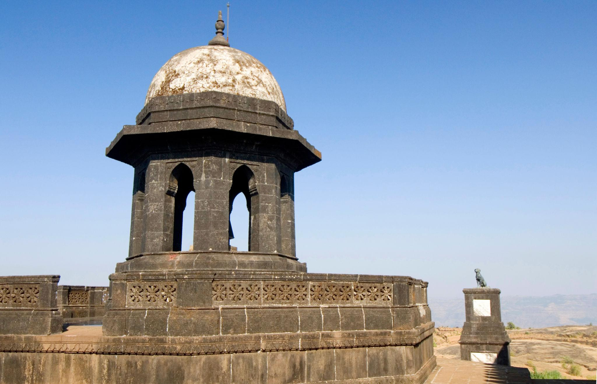
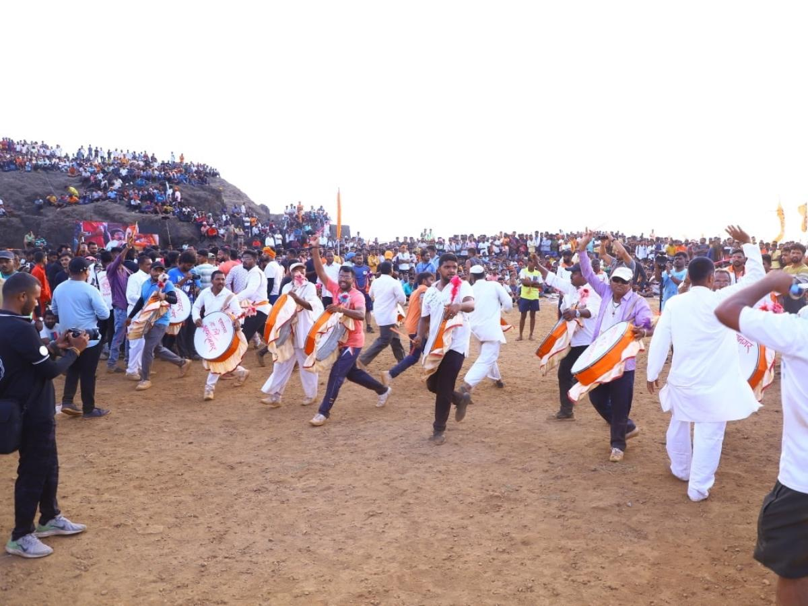
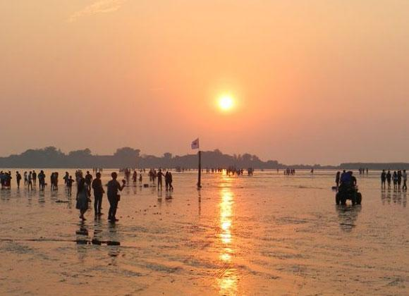
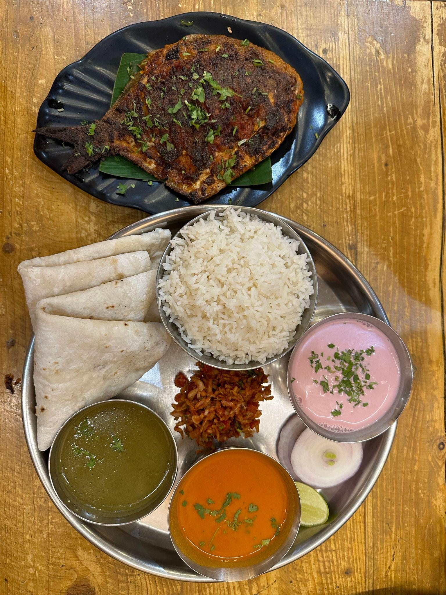
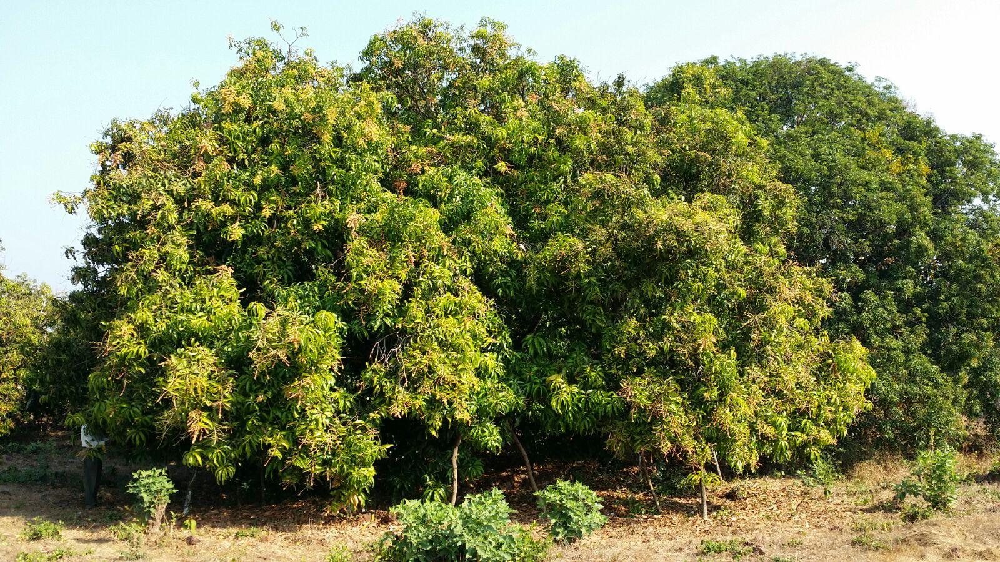
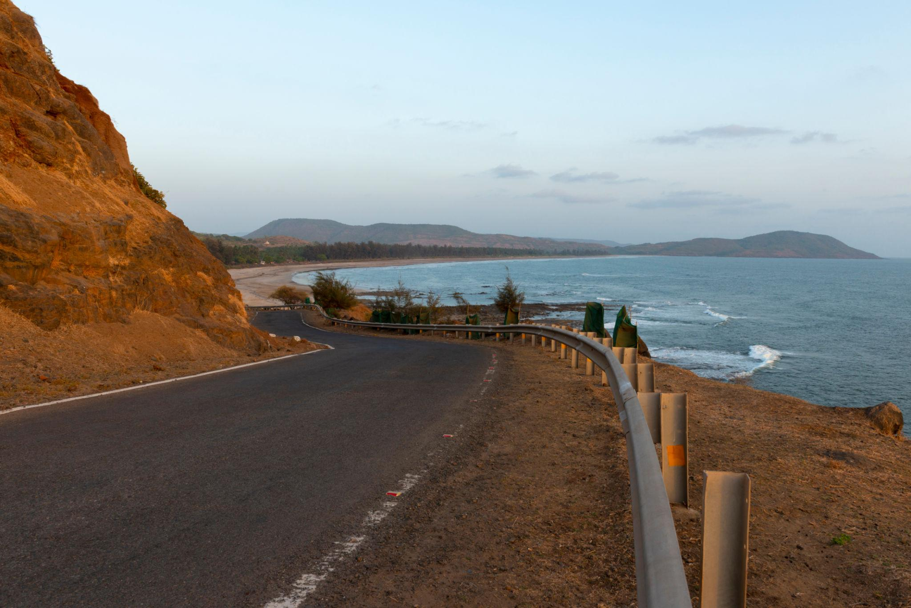
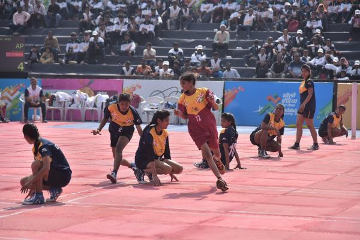

About

Raigad, a coastal district in the Konkan division of Maharashtra, is renowned for its strategic role in Maratha history, scenic landscapes, and rapid industrialization. Formerly known as Kolaba, it spans from the Arabian Sea to the Western Ghats and serves as a major economic and cultural powerhouse in the Mumbai Metropolitan Region (MMR).Bordered by Mumbai to the north and Pune to the east, Raigad features the district headquarters in Alibag. The region uniquely balances deep-rooted historical roots with bustling logistics and technological developments.
- Location: Raigad sits right next to Mumbai's harbor. It shares its northern border with Thane district and its eastern border with Pune district.
- Famous as: Raigad is globally famous for the mighty Raigad Fort (the capital of Chhatrapati Shivaji Maharaj's empire), the hill station of Matheran, and beach getaways like Alibag.
History

The district holds immense national significance as the former capital of the Maratha Empire. Chhatrapati Shivaji Maharaj fortified the formidable Raigad Fort, where his grand coronation (Rajyabhishek) took place in 1674.
- Raigad holds a deep historical legacy that evolved from the ancient maritime trade hubs of Chaul and Mahad into the ultimate powerhouse of the Maratha Empire. The region served as a highly prized stronghold where Chhatrapati Shivaji Maharaj established his grand capital at the majestic Raigad Fort and celebrated his historic coronation ceremony in 1674. Later, the district played a heroic role in India's social justice and freedom struggles, most notably through Dr. B.R. Ambedkar's historic 1927 Mahad Satyagraha, eventually changing its official name from Kolaba District to Raigad on January 1, 1981, to honor its everlasting royal heritage.
Culture

Culturally vibrant and diverse, Raigad hosts various indigenous communities and traditions. It is deeply tied to Maratha legacy while also being home to significant religious sites like the Ashtavinayak Temples, the Elephanta Caves, and the historic Mahad Chavdar Tale.
- Main Festivals:Ganesh Utsav and Navratri are celebrated with great joy across the district, but Raigad's most unique celebrations are cultural gatherings like the Alibag Tourism Festival and historical events like Shiv Jayanti at Raigad Fort. The region does not host the Upvan Arts Festival, as Upvan Lake is located in Thane; instead, Raigad locals and food lovers gather for coastal seafood festivals like the Varsoli Fish Festival to celebrate fresh, local marine catches.
- Traditional Arts:Raigad is not the home of the Gadkari Rangayatan theatre hub, which is located in Thane. Instead, Raigad is globally famous for its deep ties to Maratha royal crafts, where local artisans create stunning wooden toys in Pen, alongside energetic Koli folk music and traditional dances performed by the coastal fishing communities.
- Language:Marathi is the official language and the heart of communication across the entire district. Because of its native coastal populations and rural roots, locals speak unique regional dialects like Agri and Konkani, rather than the urban blends spoken in Mumbai's closer suburbs.
Tourism

Raigad is a premier holiday destination offering a mix of sandy beaches (e.g., Alibag, Kashid), serene hill stations like Matheran, and architectural marvels like Murud-Janjira Fort.
- Raigad Fort: The majestic hilltop capital of Chhatrapati Shivaji Maharaj.
- Karnala Bird Sanctuary: A green forest park perfect for bird watching and trekking.
- Alibag Beach: A popular coastal getaway with black sands and water sports.
Famous Food

The local cuisine relies heavily on authentic Konkani flavors. Famous dishes include rich fish curries, spicy crab, vegetarian delicacies like usal, and refreshing sol kadhi, all heavily accented with local coconut and kokum.
- Famous Food: Raigad is not famous for urban Misal Pav, but rather for its rustic, coastal Konkani foods. Locals love authentic Pithla Bhakri made from fresh millet alongside spicy Sukhi Kolambi (dry prawns) and traditional vegetarian dishes like Alu chi Vadi (colocasia leaf rolls) steamed with fresh coconut and local spices.
- Local Specialty:While Thane is famous for Mamledar Misal, Raigad's true culinary crown jewel is its coastal Agri and Koli seafood made with fresh Arabian Sea catch, thick coconut milk, and fiery homemade Agri Masala. The region is also globally famous for its sweet, juicy Alibag White Onions (which hold a geographical indication tag) and the legendary Karjat Chikki made with jaggery and nuts.
Economy

Benefiting from its proximity to Mumbai and Navi Mumbai, Raigad's economy is highly dynamic. The northern zones (such as Panvel and Uran) serve as massive hubs for EXIM logistics, warehousing, IT & ITeS, and heavy industries.
- Key Industries:Raigad is not a massive center for Information Technology (IT) or corporate back-offices. Instead, its economic backbone relies on heavy chemical manufacturing, steel processing, pharmaceuticals, and massive engineering projects. The district features powerful industrial areas managed by the Maharashtra Industrial Development Corporation (MIDC) in zones like Taloja, Roha, Patalganga, and Mahad, making it one of the largest chemical and logistics belts in the state.
- Main Crops:You are exactly right about the agriculture! Rice is the absolute main crop grown across the rural parts of the district during the monsoon season. Instead of chikoos, the region is globally famous for its sweet, medicinal Alibag White Onions, which hold a prestigious Geographical Indication (GI) tag. The district is also highly popular for harvesting premium Alphonso mangoes, Shrivardhan Rotha betelnuts, coconuts, and cashews.
Environment

Flanked by the Sahyadri mountain range, the district boasts diverse flora and fauna, dense forests, and ecologically rich zones ideal for nature conservation and eco-tourism.
- Climate:The district experiences a tropical climate that is hot and highly humid along the coast, with temperatures becoming cooler in the elevated inland regions like Matheran. It receives exceptionally heavy rainfall from June to September, turning the entire Sahyadri mountain landscape vibrant green and bringing beautiful seasonal waterfalls to life.
- Key Rivers:Raigad does not rely on the Vaitarna River or the Surya River. Instead, the Kundalika River, Amba River, Savitri River, and Patalganga River serve as the primary lifelines of the district, with the massive Bhira Dam supplying vital water and hydroelectric power to the local region.
- Protected Areas:Raigad does not house the dense forest reserves of Jawhar and Dahanu. Instead, the district is protected by the Karnala Bird Sanctuary and the Phansad Wildlife Sanctuary, which are designated conservation zones that shelter diverse bird species, leopards, giant squirrels, and rich coastal flora
Sports

Given its diverse natural terrain, Raigad is a playground for adventure sports. The pristine coastline supports various water sports, while the rocky, forested Sahyadri trails are popular for trekking, hiking, and mountain biking.
- Traditional Sports:Raigad does not focus on the tribal games of the northern Konkan border. Instead, the district is passionate about intense rural sports like Bail-Gada Shariyat (bullock cart racing) and highly competitive Kabaddi and Kho-Kho tournaments. The coastal villages also host traditional boat racing competitions during major festivals.
- Focus:The district does not focus heavily on preserving isolated tribal art communities like the Warli. Instead, Raigad focuses on a powerful mix of coastal tourism, maritime trade, and heavy industrial growth, alongside preserving its grand Maratha royal history and protecting the delicate eco-sensitive forests of the Sahyadri mountains.